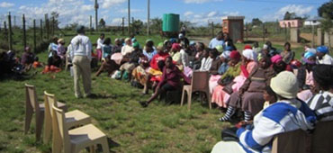

Home
About Us
Members
Projects
Governance
Contribute
Contact
Home
About Us
Members
Projects
Governance
Contribute
Contact
YARD’s highest governance structure is the PEC, which is elects the most senior office bearers at the triennial General Meeting of its beneficiary, stakeholder and role-players’ group. The agency offers competent services for the furtherance of YARD’s objectives, at different levels.
National
YARD on a national level ensures the allocation of expertise, as well as public and private resources to the provincial, district and particularly local enterprise structures of YARD. This policy level is concerned with strategically advising service rendering by YARD, taking into account the macro influences on YARD’s objectives.
PHOTO
Provincial
Is the highest decision-making body of the association and meets every 3 years. It determines policies and programmes, receives and discusses reports and has the power to appoint sub-committees on any structure whilst assigning their specific tasks
District
District leadership is closest to the tangible projects and results aimed for by YARD. The entire association's policies, reporting and programmes rely on the inputs derivedat this critical level. The other governance levels depend much on the organizational administrative processes carried out at this level.

Local
This is the level at which the substance of YARD is made tangible, where progress is evident and where we see the ambitions of our people being fulfilled. We welcome all stakeholders to focus on this level as the reason for our existence.
Working Committees
These specialist committees work hand-in-hand with district leadership, whilst being formed at provincial level. They are special focus groups, which are not part of the regular structure of the association.